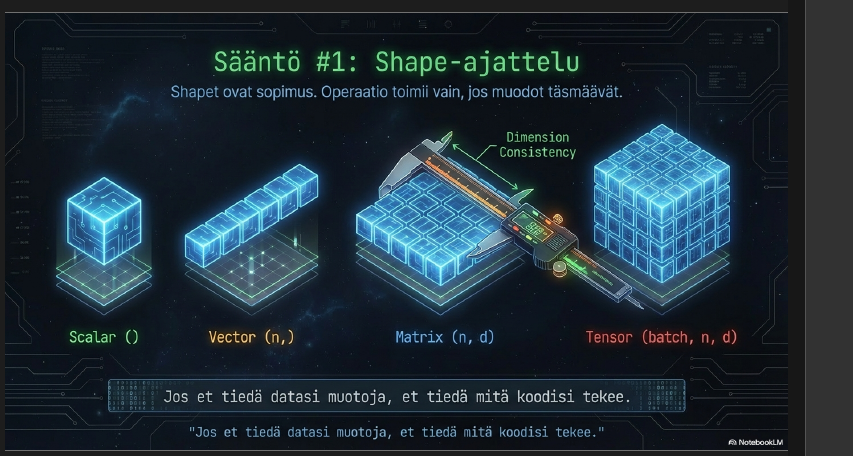
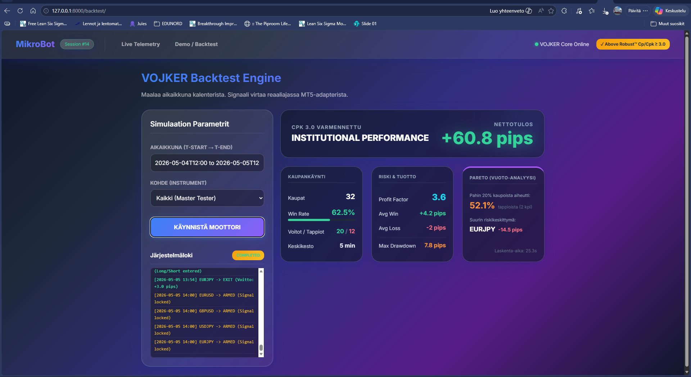

Deterministiset päätöksentekojärjestelmät ja Scientific Machine Learning (SciML) -infrastruktuurit.
Määritämme reaalimaailman datan moniulotteisiksi tensoreiksi $\mathbf{X} \in \mathbb{R}^{b \times n \times d \times k}$. Ohitamme perinteiset hitaat Python-silmukat ja vektorointi ajetaan rautatason kiihdytyksellä (vmap/pmap) suoraan GPU-klustereille.
// Device Compilation Profile
# jax.pmap parallelization matrix active
Devices Detected: 8 GPU Cores (XLA Accelerated)
Throughput Rate: Stable 140k op/sec
>>> Execution Status: Nominal
Reaalimaailman data on täynnä häiriöitä ja mustia laatikoita. Kehittämämme Triple Quantile Gate -algoritmi puristaa satunnaisen kohinan puhtaaksi ohjaussignaaliksi reaaliajassa, eristäen Pareto-pohjaiset poikkeamat.

Päätöksenteon ei kuulu arvailla. Suodatetun signaalin pohjalta toimiva matemaattinen tilakone (Finite State Machine) tekee täysin matalan latenssin päätöksiä ilman epävarmuutta. Sama syöte tuottaa poikkeuksetta saman tuloksen.

Rakennamme sovelluksia ja laskentaputkia, joiden matemaattinen virhemarginaali on nolla. Keskustellaan projektistasi.
Ota Yhteyttä Tiimiin